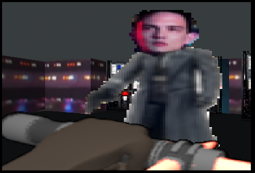
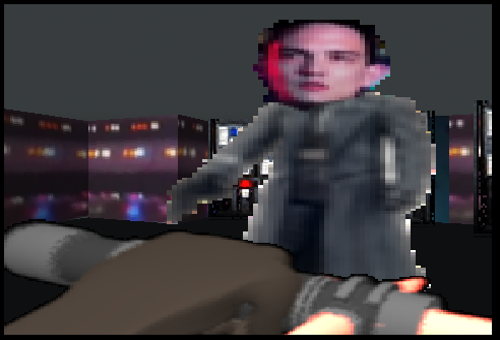
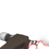
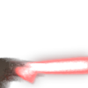
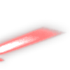
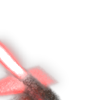
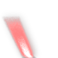

Current Projects
A short JavaScript application with dynamic actions and Bootstrap styling
First Person Kylo Ren
With The Force Awakens in theatres, I wanted to do some projects that used some design aspects from the film. This FPS with Kylo Ren's crossguard lightsaber is the first of a few projects that take inspiration from TFA.
 

    
Most of my changes were with the opening loading screens with such functions as the image load and fade in/out, as well as the secondary attack function. Also, most obviously, I either made all of the assets (the saber, the X Wing/TIE models in the intro) or scoured the web (sounds, textures, etc). There's plenty of work to be done (making more interactive enemies, complex level design...) especially since I would like this project to work more smoothly on the Raspberry Pi (I'm still using the B+, maybe I'll get a Pi 2 B+ at some point). Some simple solutions might be creating a single spritesheet instead of iterating through and loading different frames.
Resistance X-Wing
After Effects, OpenGL, and New Plugins
Blockbuster movies tend to have elaborate scenes that blend live-action footage with CGI; the feat itself is impressive, and I'd love to professionally contribute to that process someday. However, I'm interested in bringing those two levels closer together: there's the live-action layer that the audience can easily accept as "real", but that perception of "real" is at odds with the CG layer, whether because of the models, textures, animation, compositing, etc. My goal with this project is to create an image processing plugin, script, and/or algorithm that identifies "bare minimum" edges from, say, a live-action layer and a CG layer, and also reduces the textures to the same amount of detail. For those familiar with Photoshop, what I have in mind is kind of like the cutout and find edges filters put together. If I can get texture control over the edges, I envision an anime-ish look to whatever video layer the plugin is applied to. As I progress with this project, I hope to publish some development images to show some examples.